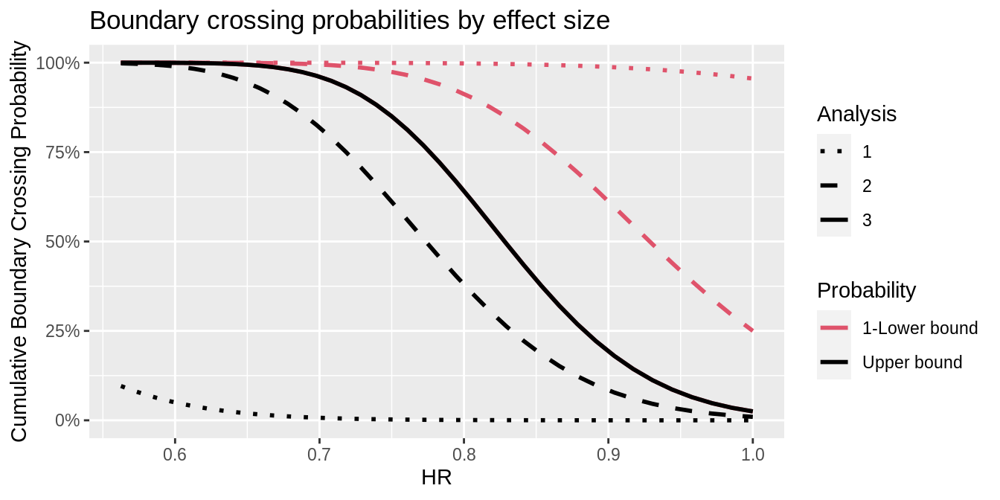
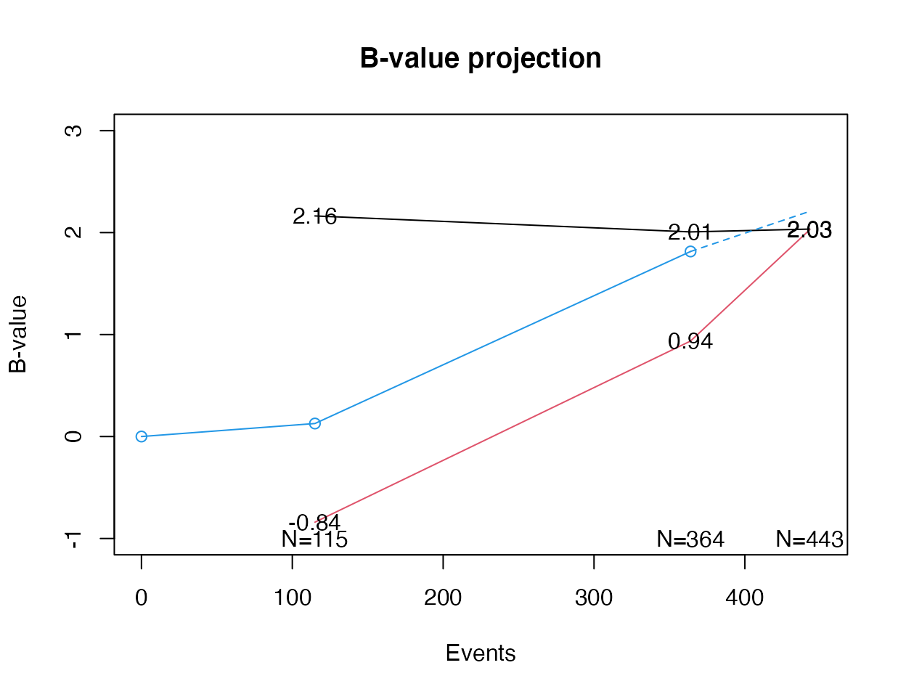

gsSurvBasicExamples.RmdThis article/vignette provides a basic time-to-event endpoint designs for fixed designs using nSurv() and group sequential designs using gsSurv(). Some detail in specification comes with the flexibility allowed by the Lachin and Foulkes (1986) method for sample size under a proportional hazards model with piecewise constant enrollment, piecewise exponential failure and dropout rates. Users may also be interested in the Shiny interface as a learning tool. We only use the simplest options here with a single stratum and exponential failure and dropout rates; see the help file for gsSurv() for examples with a stratified population or piecewise exponential failure.
We apply the Lachin and Foulkes (1986) sample size method and extend it to group sequential design. This method fixes the duration of a study and varies enrollment rates to power a trial. We also use the Lachin and Foulkes (1986) basic power calculation to compute sample size along the lines of Kim and Tsiatis (1990) where enrollment rates are fixed and enrollment duration is allowed to vary to enroll a sufficient sample size to power a study.
Since the parameters used for a design with no interim are also used for a group sequential design, we first specify and derive a design with no interim analysis.
We begin with information about the median time-to-event in the control group, dropout rate, hazard ratios under the null and alternate hypotheses for experimental therapy compared to control, and the desired Type I and II error rates.
# median control time-to-event median <- 12 # exponential dropout rate per unit of time eta <- .001 # hypothesized experimental/control hazard ratio # (alternate hypothesis) hr <- .75 # null hazard ratio (1 for superiority, >1 for non-inferiority) hr0 <- 1 # Type I error (1-sided) alpha <- .025 # Type II error (1-power) beta <- .1
Next, we plan the trial duration and the enrollment pattern. There are two basic methods for doing this. The Lachin and Foulkes (1986) method demonstrated here fixes the enrollment pattern and duration as well as the trial duration and changes the absolute enrollment rates to obtain desired power. The alternate recommended method is along the lines of Kim and Tsiatis (1990), fixing the enrollment rates and follow-up duration, varying the total trial duration to power the design; this will also be demonstrated below.
The above information is sufficient to design a trial with no interim analyses. Note that when calling nSurv(), we transform the median time-to-event (\(m\)) to an exponential event rate (\(\lambda\)) with the formula \[\lambda=\log(2)/m.\]
library(gsDesign) #> Loading required package: ggplot2 x <- nSurv(R = R, gamma = gamma, eta = eta, minfup = minfup, T = T, lambdaC = log(2)/median, hr = hr, hr0 = hr0, beta = beta, alpha = alpha)
A textual summary of this design is given by printing it. For the group sequential design shown later, much more complete formatted output will be shown.
x #> Fixed design, two-arm trial with time-to-event #> outcome (Lachin and Foulkes, 1986). #> Solving for: Accrual rate #> Hazard ratio H1/H0=0.75/1 #> Study duration: T=36 #> Accrual duration: 24 #> Min. end-of-study follow-up: minfup=12 #> Expected events (total, H1): 507.1519 #> Expected sample size (total): 775.0306 #> Accrual rates: #> Stratum 1 #> 0-1 9.2818 #> 1-3 13.9227 #> 3-6 23.2045 #> 6-24 37.1272 #> Control event rates (H1): #> Stratum 1 #> 0-Inf 0.0578 #> Censoring rates: #> Stratum 1 #> 0-Inf 0.001 #> Power: 100*(1-beta)=90% #> Type I error (1-sided): 100*alpha=2.5% #> Equal randomization: ratio=1
Now we move on to a group sequential design.
All the parameters above are used. We set up the number of analyses, timing and spending function parameters. These deserve careful attention for every trial and tend to be somewhat customized to be fit-for-purpose according to all those involved in designing the trial. Here the choices considered the following:
# number of analyses (interim + final) k <- 3 # timing of interim analyses (k-1 increasing numbers >0 and <1) # proportion of final events at each interim timing <- c(.25,.75) # efficacy bound spending function # We use Lan-DeMets spending function approximating O'Brien-Fleming bound # no parameter required for this spending function sfu <- sfLDOF sfupar <- NULL # futility bound spending function sfl <- sfHSD # futility bound spending parameter specification sflpar <- -7
Type II error (1-power) may be set up differently than for a fixed design so that more meaningful futility analyses can be performed during the course of the trial.
# Type II error = 1-Power beta <- .15
The design summary is:
Asymmetric two-sided group sequential design with non-binding futility bound, 3 analyses, time-to-event outcome with sample size 676 and 443 events required, 85 percent power, 2.5 percent (1-sided) Type I error to detect a hazard ratio of 0.75. Enrollment and total study durations are assumed to be 24 and 36 months, respectively. Efficacy bounds derived using a Lan-DeMets O’Brien-Fleming approximation spending function with none = 1. Futility bounds derived using a Hwang-Shih-DeCani spending function with gamma = -7.
An important addition not provided above is that the median time-to-event is assumed to be 12 months in the control group.
Following are the enrollment rates required to power the trial.
library(gt) library(tibble) tibble(Period = paste("Month",rownames(x$gamma)), Rate = as.numeric(x$gamma)) %>% gt() %>% tab_header(title = "Enrollment rate requirements")
| Enrollment rate requirements | |
|---|---|
| Period | Rate |
| Month 0-1 | 8.090968 |
| Month 1-3 | 12.136452 |
| Month 3-6 | 20.227421 |
| Month 6-24 | 32.363873 |
Next we provide a tabular summary of bounds for the design. We have added extensive footnoting to the table, which may or may not be required for your design. However, as seen here it makes many choices for design parameters and properties transparent. No attempt has been made to automate this, but it may be worth considering for a template if you wish to make the same choice across many trials. Note that the exclude argument for gsBoundSummary() allows additional descriptions for design bounds such as conditional or predictive power; see the help file for details or just provide exclude = NULL to gsBoundSummary() to see all options.
# footnote text for table footnote1 <- "P{Cross} is the probability of crossing the given bound (efficacy or futility) at or before the given analysis under the assumed hazard ratio (HR)." footnote2 <- " Design assumes futility bound is discretionary (non-binding); upper boundary crossing probabilities shown here assume trial stops at first boundary crossed and thus total less than the design Type I error." footnoteHR <- "HR presented is not a requirement, but an estimate of approximately what HR would be required to cross each bound." footnoteM <- "Month is approximated given enrollment and event rate assumptions under alternate hypothesis." # spending function footnotes footnoteUS <-"Efficacy bound set using Lan-DeMets spending function approximating an O'Brien-Fleming bound." footnoteLS <- paste("Futility bound set using ",x$lower$name," beta-spending function with ", x$lower$parname,"=",x$lower$param,".",sep = "") # caption text for table caption <- paste("Overall survival trial design with HR=",hr,", ",100*(1-beta),"% power and ",100*alpha,"% Type 1 error",sep = "")
gsBoundSummary(x) %>% gt() %>% tab_header(title = "Time-to-event group sequential design") %>% cols_align("left") %>% tab_footnote(footnoteUS,locations = cells_column_labels(columns = 3)) %>% tab_footnote(footnoteLS,locations = cells_column_labels(columns = 4)) %>% tab_footnote(footnoteHR,locations = cells_data(columns = 2,rows = c(3,8,13))) %>% tab_footnote(footnoteM,locations = cells_data(columns = 1,rows = c(4,9,14))) %>% tab_footnote(footnote1,locations = cells_data(columns = 2,rows = c(4,5,9,10,14,15))) %>% tab_footnote(footnote2,locations = cells_data(columns = 2,rows = c(4,9,14))) #> Warning: The `cells_data()` function is deprecated and will soon be removed #> * Use the `cells_body()` function instead #> Warning: The `cells_data()` function is deprecated and will soon be removed #> * Use the `cells_body()` function instead #> Warning: The `cells_data()` function is deprecated and will soon be removed #> * Use the `cells_body()` function instead #> Warning: The `cells_data()` function is deprecated and will soon be removed #> * Use the `cells_body()` function instead
| Time-to-event group sequential design | |||
|---|---|---|---|
| Analysis | Value | Efficacy1 | Futility2 |
| IA 1: 25% | Z | 4.3326 | -1.7019 |
| N: 414 | p (1-sided) | 0.0000 | 0.9556 |
| Events: 111 | ~HR at bound3 | 0.4386 | 1.3823 |
| Month: 164 | P(Cross) if HR=15,6 | 0.0000 | 0.0444 |
| P(Cross) if HR=0.755 | 0.0024 | 0.0007 | |
| IA 2: 75% | Z | 2.3398 | 0.6728 |
| N: 676 | p (1-sided) | 0.0096 | 0.2505 |
| Events: 332 | ~HR at bound3 | 0.7734 | 0.9288 |
| Month: 284 | P(Cross) if HR=15,6 | 0.0096 | 0.7500 |
| P(Cross) if HR=0.755 | 0.6110 | 0.0260 | |
| Final | Z | 2.0118 | 2.0118 |
| N: 676 | p (1-sided) | 0.0221 | 0.0221 |
| Events: 443 | ~HR at bound3 | 0.8258 | 0.8258 |
| Month: 364 | P(Cross) if HR=15,6 | 0.0249 | 0.9751 |
| P(Cross) if HR=0.755 | 0.8500 | 0.1500 | |
|
1
Efficacy bound set using Lan-DeMets spending function approximating an O'Brien-Fleming bound.
2
Futility bound set using Hwang-Shih-DeCani beta-spending function with gamma=-7.
3
HR presented is not a requirement, but an estimate of approximately what HR would be required to cross each bound.
4
Month is approximated given enrollment and event rate assumptions under alternate hypothesis.
5
P{Cross} is the probability of crossing the given bound (efficacy or futility) at or before the given analysis under the assumed hazard ratio (HR).
6
Design assumes futility bound is discretionary (non-binding); upper boundary crossing probabilities shown here assume trial stops at first boundary crossed and thus total less than the design Type I error.
|
|||
Several plots are available to summarize a design; see help for plot.gsDesign(); one easy way to see how to generate each is by checking plots and code generated by the Shiny interface. The power plot is information-rich, but also requires some explanation; thus, we demonstrate here.
The solid black line represents the trial power by effect size. Power at interim 1 is represented by the black dotted line. Cumulative power at interim 2 is represented by the black dashed line. The red dotted line is 1 minus the probability of crossing the futility bound on the percentage scale. The red dashed line is 1 minus the cumulative probability of crossing the futility bound by interim 2.
library(ggplot2) library(scales) plot(x,plottype = "power",cex = .8,xlab = "HR") + scale_y_continuous(labels = scales::percent)

Analyses rarely occur at exactly the number of events which are planned. The advantage of the spending function approach to design is that bounds can be updated to account for the actual number of events observed at each analysis. In fact, analyses can be added or deleted noting that any changes in timing or analyses should not be made with knowledge of unblinded study results. We suggest tables and a plot that may be of particular use. We also present computation of conditional and predictive power.
First, we update the actual number of events for interims 1 and 2 and assume the final analysis event count is still as originally planned:
The simple updates to Z-values and p-values for the design based on information fraction just requires the fraction of final events planned, but does not include the number of events or treatment effect in the output:
xu <- gsDesign(alpha = x$alpha, beta = x$beta, maxn.IPlan = x$n.I[x$k], n.I = n.I, sfu = sfu, sfupar = sfupar, sfl = sfl, sflpar = sflpar, delta = x$delta, delta1 = x$delta1, delta0 = x$delta0)
Now we print the design summary, selecting minimal calculations for a table to provide guidance for review of results. If you wish to see all possible summaries of bounds, change to exclude = NULL below. Here we have assumed futility guidance is based on the hazard ratio at interim analysis; this is not generally the case, but is an option as these bounds are guidance rather than having strict inferential interpretation.
gsBoundSummary(xu, deltaname="HR", logdelta=TRUE, Nname="Events", exclude = c("Spending", "B-value", "CP", "CP H1", "PP", "P(Cross) if HR=1","P(Cross) if HR=0.75")) %>% gt() %>% cols_align("left") %>% tab_header(title = "Time-to-event group sequential bound guidance", subtitle = "Bounds updated based on event counts through IA2") %>% tab_footnote("Nominal p-value required to establish statistical significance.", locations=cells_data(columns = 3, rows = c(2, 5, 8))) %>% tab_footnote("Interim futility guidance based on observed HR is non-binding.", locations=cells_data(columns = 4, rows = c(3, 6))) %>% tab_footnote("HR bounds are approximations; decisions on crossing are based solely on p-values.", locations=cells_data(column= 2, rows = c(3, 6, 9))) #> Warning: The `cells_data()` function is deprecated and will soon be removed #> * Use the `cells_body()` function instead #> Warning: The `cells_data()` function is deprecated and will soon be removed #> * Use the `cells_body()` function instead #> Warning: The `cells_data()` function is deprecated and will soon be removed #> * Use the `cells_body()` function instead
| Time-to-event group sequential bound guidance | |||
|---|---|---|---|
| Bounds updated based on event counts through IA2 | |||
| Analysis | Value | Efficacy | Futility |
| IA 1: 26% | Z | 4.2416 | -1.6470 |
| Events: 115 | p (1-sided) | 0.00001 | 0.9502 |
| ~HR at bound2 | 0.4534 | 1.35963 | |
| IA 2: 82% | Z | 2.2115 | 1.0322 |
| Events: 364 | p (1-sided) | 0.01351 | 0.1510 |
| ~HR at bound2 | 0.7931 | 0.89743 | |
| Final | Z | 2.0323 | 2.0261 |
| Events: 443 | p (1-sided) | 0.02111 | 0.0214 |
| ~HR at bound2 | 0.8244 | 0.8249 | |
|
1
Nominal p-value required to establish statistical significance.
2
HR bounds are approximations; decisions on crossing are based solely on p-values.
3
Interim futility guidance based on observed HR is non-binding.
|
|||
We recommend 3 things to present to summarize results in addition to standard summaries such as the logrank p-value, hazard ratio based on the Cox model, median time-to-event and Kaplan-Meier curves by treatment group.
For these summaries, we will assume the updated interim event counts used above along with interim Z-values of 0.25 and 2 at interim 1 and interim 2, respectively.
Z <- c(0.25, 2)
Conditional power at interim analysis 2 is computed for the current trend, under the null hypothesis (HR=1), and under the alternate hypothesis (HR=0.75 in this case) as follows:
gsCP(x = xu, # updated design i = 2, # interim analysis 2 zi = Z[2] # observed Z-value for testing )$upper$prob #> [,1] [,2] [,3] #> [1,] 0.6599398 0.301728 0.7764629
Predictive power incorporates uncertainty into the above conditional power evaluation. The computation assumes a prior distribution for the treatment effect and then updates to a posterior distribution for the treatment effect based on the most recent interim result. The conditional probability of a positive finding is then averaged according to this posterior. We specify a normal prior for the standardized effect size using the gsDesign::normalGrid() function. We select a weak prior with mean half-way between the alternative (x$delta) and null (0) hypotheses and a variance equivalent to observing 5% (=1/20) of the targeted events at the final analysis; the following shows that the standard deviation for the prior is well over twice the mean, so the prior is relatively weak.
prior <- normalGrid(mu = x$delta/2, sigma = sqrt(20/max(x$n.I))) cat(paste(" Prior mean:", round(x$delta/2, 3), "\n Prior standard deviation", round(sqrt(20/x$n.fix), 3), "\n")) #> Prior mean: 0.072 #> Prior standard deviation 0.215
Now based on the interim 2 result, we compute the predictive power of a positive final analysis.
gsPP(x = xu, # updated design i = 2, # interim analysis 2 zi = Z[2], # observed Z-value for testing theta = prior$z, # grid points for above prior wgts = prior$wgts # weights for averaging over grid ) #> [1] 0.6407376
A B-value (Proschan, Lan, and Wittes (2006)) is a Z-value multiplied by the square root of the information fraction (interim information divided by final planned information. In the plot below on the B-value scale, we present the efficacy bounds at each analysis in black, futility guidance in red, the observed interim tests in blue connected by solid lines, and a dashed blue line to project the final result. Under a constant treatment effect (proportional hazards for a time-to-event outcome tested with a logrank test) the blue line behaves like observations from a Brownian motion with a linear trend (“constant drift”). While a comparable Z-value plot would have the effect increasing with the square root of the number of events, the B-value plot trend is linear in the event count. The trend is proportional to the logarithm of the underlying hazard ratio. The projected final test is based on the dashed line which represents a linear trend based on the most recent B-value computed; this projection is what was used in the conditional power calculation under the current trend that was computed above.
maxx <- 450 # max for x-axis specified by user ylim <- c(-1,3) # user-specified y-axis limits analysis <- 2 # current analysis specified by user # Following code should require no further changes plot(xu, plottype="B", base=TRUE, xlim=c(0,maxx), ylim=ylim, main="B-value projection", lty=1, col=1:2, xlab="Events") N <- c(0, xu$n.I[1:analysis]) B <- c(0, Z * sqrt(xu$timing[1:analysis])) points(x = N, y = B, col = 4) lines(x = N, y = B, col = 4) slope <- B[analysis+1] / N[analysis + 1] Nvals <- c(N[analysis+1], max(xu$n.I)) lines(x = Nvals, y = B[analysis + 1] + c(0, slope * (Nvals[2] - Nvals[1])), col = 4, lty = 2)

Kim, Kyungmann, and Anastasios A. Tsiatis. 1990. “Study Duration for Clinical Trials with Survival Response and Early Stopping Rule.” Biometrics 46: 81–92.
Lachin, John M., and Mary A. Foulkes. 1986. “Evaluation of Sample Size and Power for Analyses of Survival with Allowance for Nonuniform Patient Entry, Losses to Follow-up, Noncompliance, and Stratification.” Biometrics 42: 507–19.
Lan, K. K. G., and David L. DeMets. 1983. “Discrete Sequential Boundaries for Clinical Trials.” Biometrika 70: 659–63.
Proschan, Michael A., K. K. Gordon Lan, and Janet Turk Wittes. 2006. Statistical Monitoring of Clinical Trials. A Unified Approach. New York, NY: Springer.